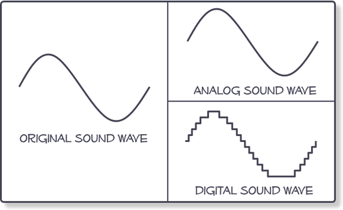

Digital lyd
Digital lyd eller digital audio er eit omgrep som vert nytta om prosessering, lagring og distribusjon av lydmateriale på digital form. Digital lyd stammar frå 1970-talet, då ein tok til å eksperimentere med å konvertere analoge lydsignal til sekvensar av binære tal for å kunne handsama dei med datamaskiner og lagre dei på tape på binær form. Utstyr for digital lyd var opphavleg svært kostbart og vart berre nytta i profesjonell samanheng. Det var fyst då kompaktplatene kom på marknaden fyrst på 1980 at folk flest vart kjent med digital lyd.Komprimering
Det finst både tapsfrie komprimeringsalgoritmar, som FLAC og MLP, og metodar som fører til tap av kvalitet, som MP3, AAC og Vorbis. Den siste gruppa fjernar noko informasjon for å reduera datamengda, men på ein slik måte at det har så liten innverknad på kvaliteten som mogeleg.Digitalisering
Digitalisering av lyd og bilde er en prosess der analoge signaler konverteres til digitale signaler. Digitalisering benyttes i dagligtale om konvertering av lyd og bilde til digitalbilder og digital lyd. Digitalt lagrede opplysninger har den fordelen at signalene ikke svekkes nevneverdig over tid, samt at lyd og bilder kan også kopieres fra ett digitalt medium til et annet, uten at kvaliteten forringes. Man regner med at høykvalitets CD-er eller DVD-er vil holde i minst 100 år. Hvis man med jevne mellomrom, for eksempel hvert tyvende år kopierer informasjon til nyere medier, vil de digitale signalene i prinsippet bevare sin kvalitet uendelig.
